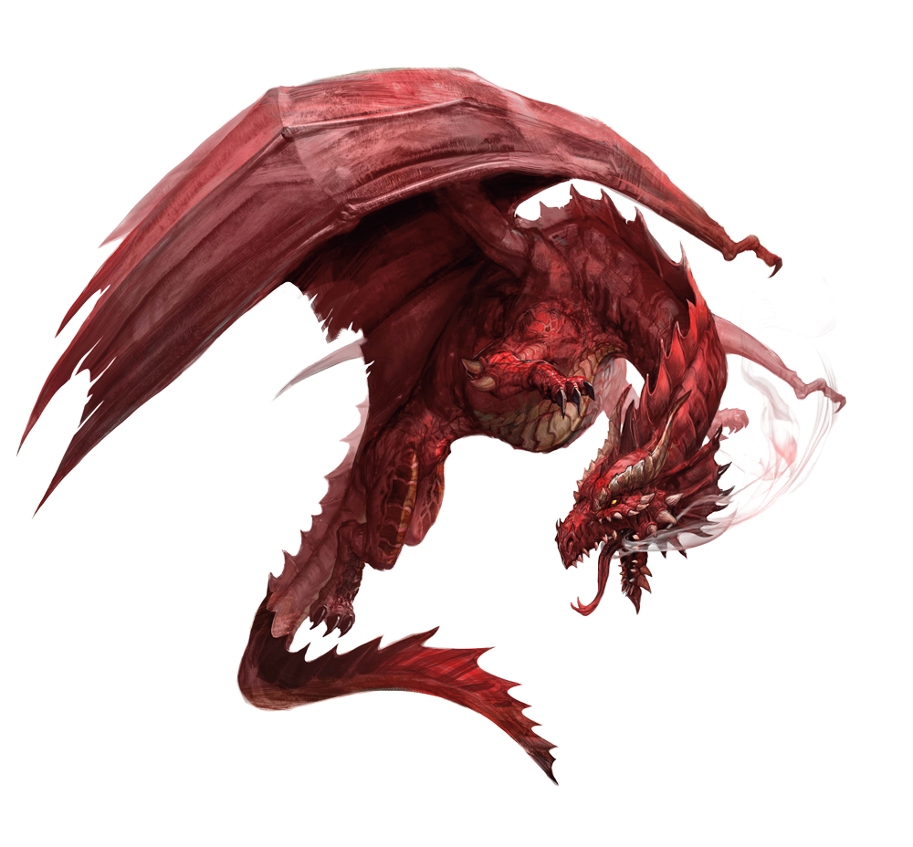

EL DRAGÓN
El Dragón posee la capacidad de asumir muchas formas, pero éstas son inescrutables. En
general lo imaginan con cabeza de caballo, cola de serpiente, grandes alas laterales y cuatro
garras, cada una provista de cuatro uñas. Se habla asimismo de sus nueve semblanzas: sus
cuernos se asemejan a los de un ciervo, su cabeza a la del camello, sus ojos a los de un
demonio, su cuello al de la serpiente, su vientre al de un molusco, sus escamas a las de un
pez, sus garras a las del águila, las plantas de sus pies a las del tigre, y sus orejas a las del
buey. Hay ejemplares a quienes les faltan orejas y que oyen por los cuernos. Es habitual
representarlo con una perla, que pende de su cuello y es emblema del sol. En esa perla está
su poder. Es inofensivo si se la quitan.
La historia le atribuye la paternidad de los primeros emperadores. Sus huesos, dientes y saliva
gozan de virtudes medicinales. Puede, según su voluntad, ser visible a los hombres o invisible.
En la primavera sube a los cielos; en el otoño se sumerge en la profundidad de las aguas.
Algunos carecen de alas y vuelan con ímpetu propio. La ciencia distingue diversos géneros.
El Dragón rige las montañas, se vincula a la geomancia, mora cerca de los sepulcros, está
asociado al culto de Confucio, es el Neptuno de los mares y aparece en tierra firme. Los reyes
de los Dragones del Mar habitan resplandecientes palacios bajo las aguas y se alimentan de
ópalos y de perlas. Hay cinco de esos reyes: el principal está en el centro, los otros cuatro
corresponden a los puntos cardinales. Tienen una legua de largo; al cambiar de postura hacen
chocar a las montañas. Están revestidos de una armadura de escamas amarillas. Bajo el
hocico tienen una barba; las piernas y la cola son velludas. La frente se proyecta sobre los
ojos Llameantes, las orejas son pequeñas y gruesas, la boca siempre abierta, la lengua larga y
los dientes afilados. El aliento hierve a los peces, las exhalaciones del cuerpo los asa. Cuando
suben a la superficie de los océanos producen remolinos y tifones; cuando vuelan por los aires
causan tormentas que destechan las casas de las ciudades y que inundan los campos. Son
inmortales y pueden comunicarse entre sí a pesar de las distancias que los separan y sin
necesidad de palabras. En el tercer mes hacen su informe anual a los cielos superiores.
El Dragón Chino

La cosmogonía china enseña que los Diez Mil Seres (el mundo) nacen del juego rítmico de dos
principios complementarios y eternos, que son el Yin y el Yang. Corresponden al Yin la
concentración, la oscuridad, la pasividad, los números pares y el frío; al Yang, el crecimiento,
la luz, el ímpetu, los números impares y el calor. Símbolos del Yin son la mujer, la tierra, el
anaranjado, los valles, los cauces de los ríos y el tigre; del Yang, el hombre, el cielo, el azul,
las montañas, los pilares, el Dragón.
El Dragón Chino, el Lung, es uno de los cuatro animales mágicos. (Los otros son el unicornio,
el fénix y la tortuga.) En el mejor de los casos el Dragón Occidental es aterrador, y en el peor,
ridículo; el Lung de las tradiciones, en cambio, tiene divinidad y es como un ángel que fuera
también león. Así, en las Memorias históricas de Ssu-Ma Ch'ien leemos que Confucio fue a
consultar al archivero o bibliotecario Lao Tse y que, después de la visita, manifestó:
"Los pájaros vuelan, los peces nadan y los animales corren. El que corre puede ser detenido
por una trampa, el que nada por una red y el que vuela por una flecha. Pero ahí está el
Dragón; no sé cómo cabalga en el viento ni cómo Llega al cielo. Hoy he visto a Lao Tse y
puedo decir que he visto al Dragón".
Un Dragón o un Caballo-Dragón surgió del río Amarillo y reveló a un emperador el famoso
diagrama circular que simboliza el juego recíproco del Yang y el Yin; un rey tenía en sus
establos Dragones de silla y de tiro; otro se nutrió de Dragones y su reino fue próspero. Un
gran poeta, para ilustrar los riesgos de la eminencia, pudo escribir: "El Unicornio acaba como
tambre, el Dragón como pastel de carne".
En el I King (Canon de las Mutaciones), el Dragón suele significar el sabio.
Durante siglos, el Dragón fue el emblema imperial. El trono del emperador se llamó el Trono
del Dragón; su rostro, el Rostro del Dragón. Para anunciar que el emperador había muerto, se
decía que había ascendido al firmamento sobre un Dragón.
El Dragón Chino tiene cuernos, garras y escamas, y su espinazo está como erizado de púas.
Es habitual representarlo con una perla, que suele tragar o escupir; en esa perla está su
poder. Es inofensivo si se la quitan.
El Dragón de Occidente

Una gruesa y alta serpiente con garras y alas es quizá la descripción más fiel del Dragón.
Puede ser negro, pero conviene que también sea resplandeciente; asimismo suele exigirse que
exhale bocanadas de fuego y de humo. Lo anterior se refiere, naturalmente, a su imagen
actual; los griegos parecen haber aplicado su nombre a cualquier serpiente considerable. Plinio
refiere que en el verano el Dragón apetece la sangre del elefante, que es notablemente fría.
Bruscamente lo ataca, se le enrosca y le clava los dientes. El elefante exangüe rueda por tierra
y muere; también muere el Dragón, aplastado por el peso de su adversario. También leemos
que los Dragones de Etiopía, en busca de mejores pastos, suelen atravesar el Mar Rojo y
emigrar a Arabia. Para ejecutar esa hazaña, cuatro o cinco Dragones se abrazan y forman una
especie de embarcación, con las cabezas fuera del agua. Otro capítulo hay dedicado a los
remedios que se derivan del Dragón. Ahí se lee que sus ojos, secados y batidos con miel,
forman un linimento eficaz contra las pesadillas. La grasa del corazón del Dragón guardada en
la piel de una gacela y atada al brazo con los tendones de un ciervo asegura el éxito en los
litigios; los dientes, asimismo, atados al cuerpo, hacen qué los amos sean indulgentes y los
reyes graciosos. El texto menciona con escepticismo una preparación que hace invencibles a
los hombres. Se elabora con pelo de león, con la médula de ese animal, con la espuma de un
caballo que acaba de ganar una carrera, con las uñas de un perro y con la cola y la cabeza de
un Dragón.
En el libro undécimo de la Ilíada se lee que en el escudo de Agamenón había un Dragón azul y
tricéfalo; siglos después los piratas escandinavos pintaban Dragones en sus escudos y
esculpían cabezas de Dragón en las proas de las naves. Entre los romanos, el Dragón fue
insignia de la cohorte, como el águila de la legión; tal es el origen de los actuales Regimientos
de Dragones. En los estandartes de los reyes germánicos de Inglaterra había Dragones; el
objeto de tales imágenes era infundir terror a los enemigos. Así, en el romance de Athis se
lee:
Ce souloient Romains porter, Ce nous fait moult à redouter*.
Esto solían llevar los romanos, / Esto hace que nos teman muchísimo.
En el Occidente el Dragón siempre fue concebido como malvado. Una de las hazañas clásicas
de los héroes (Hércules, Sigurd, San Miguel, San Jorge) era vencerlo y matarlo. En las
leyendas germánicas, el Dragón custodia objetos preciosos. Así, en la Gesta de Beowulf,
compuesta en Inglaterra hacia el siglo VIII, hay un Dragón que durante trescientos años es
guardián de un tesoro. Un esclavo fugitivo se esconde en su caverna y se lleva un jarro. El
Dragón se despierta, advierte el robo y resuelve matar al ladrón; a ratos baja a la caverna y la
revisa bien. (Admirable ocurrencia del poeta atribuir al monstruo esa inseguridad tan
humana.) El Dragón empieza a desolar el reino; Beowulf lo busca, combate con él y lo mata.
La gente creyó en la realidad del Dragón. Al promediar el siglo XVI, lo registra la Historia
Animalium de Conrad Gesner, obra de carácter científico.
El tiempo ha desgastado notablemente el prestigio de los Dragones. Creemos en el león como
realidad y como símbolo; creemos en el minotauro como símbolo, ya que no como realidad; el
Dragón es acaso el más conocido, pero también el menos afortunado de los animales
fantásticos. Nos parece pueril y suele contaminar de puerilidad las historias en que figura.
Conviene no olvidar, sin embargo, que se trata de un prejuicio moderno, quizá provocado por
el exceso de Dragones que hay en los cuentos de hadas. Empero, en la Revelación de San
Juan se habla dos veces del Dragón, "la vieja serpiente que es el Diablo y es Satanás".
Análogamente, San Agustín escribe que el diablo "es león y Dragón; león por el ímpetu,
Dragón por la insidia". Jung observa que en el Dragón están la serpiente y el pájaro, los
elementos de la tierra y el aire.